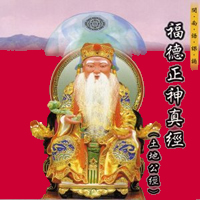

福德正神經

淨三業神 咒
身中多內境。三萬六千神。動作履行藏。前劫並後業。願我身自在。常住三寶中。 當於劫壞時。我身常不滅。誦此真文時。身心口業皆清淨。
淨心神咒
太上台星。應變無停。驅邪縛魅。保命護身。智慧明淨。心神安寧。三魂永久。魄 無喪傾。急急如律令。
淨口神咒
丹朱口神。吐穢除氛。舌神正倫。通命養神。羅千齒神。卻邪衛真。喉神虎賁。氣 神引津。心神丹元。令我通真。思神鍊液。道氣長存。急急如律令。
淨身神咒
靈寶天尊。安慰身形。弟子魂魄。五臟玄冥。青龍白虎。隊仗紛紜。朱雀玄武。侍 衛我身。急急如律令。
安土地神咒
元始安鎮。普告萬靈。嶽瀆真官。土地祇神。左社右稷。不得妄驚。回向正道。內 出澄清。各方安位。備守壇前。太上有命。搜補邪精。護法神王。保衛誦經。 皈依大道。元亨利貞。急急如律令。
淨天地神咒
天地自然。穢氣分散。洞中玄虛。晃朗太元。八方威神。使我自然。靈寶符命。普 告九天。乾羅答那。洞罡太玄。斬妖縛邪。渡人(殺鬼)萬千。中山神咒。元始玉文。 持誦一遍。卻病延年。按行五嶽。八海知聞。魔王束手。侍衛我軒。凶穢消散。道 氣長存。急急如律令。
淨壇咒
太上說法時。金鐘響玉音。百穢藏九地。群魔護騫林。天花散法雨。法鼓振迷沉。 諸天賡善哉。金童舞瑤琴。願傾八霞光。照依皈依心。蚤法大法稿。翼侍五雲深。 急急如律令。
祝香神咒
道由心學。心假香傳。香熱玉爐。心存帝前。真靈下盼。仙珮臨軒。弟子關告。 逕達九天。
金光神咒
天地玄宗。萬氣本根。廣修萬劫。證吾神通。三界內外。惟道獨尊。體有金光。覆 映吾身。視之不見。聽之不聞。包羅天地。養育群生。誦持一遍。身有光明。三界 侍衛。五帝司迎。萬神朝禮。役使雷霆。鬼妖喪膽。精怪亡形。內有霹靂。雷神隱 名。洞慧交徹。五氣騰騰。金光速現。覆護真人。急急如律令。
請
聖神仙佛在天台。大發慈悲降下來。眾等一心虔拜請。特求賜福於消災。
開經偈
玄奧甚深真妙法。壇高萬劫永無侵。我今頂禮虔持誦。赫赫威靈嚴又森。南無開寶 經菩薩摩訶薩。
福德正神寶誥
至心皈命禮
三皇五帝部下。后土真君。以身垂範。荒拓開墾。教織種植。匡王協運。德高望重。 雍行乾坤。廣濟人倫。萬姓蒙祐。受敕封為「福德正神」。秉忠正烈。助國衛民。 膺承簡命。鎮一方而黎庶仰瞻。保祐四境。作物豐盈。掌傳奏而丹忱上達。義貫九 天。善惡昭彰而響應。靈通三界。功過糾察以分明。修仁見性。鞏固金湯奠安稷。 佈施群黎。醒世節儉大忠大孝。至顯至靈。婦孺老幼。享受天倫。當境土地。后土 尊神福德天尊。
福德正神經
吾是三皇五帝后土之臣。本境真君。順天之志。開倉辟地之柄。引人拓植。必配乾 坤。喚醒愚民。墾荒教導純純。人人敬我。我愛人群。有人問我名為姓。凡是共工 氏之子炎帝子孫句龍。立志精忠威靈存存。後世人德高望重。敕封「福德正神」。 鎮守金域。管護社稷。保祐四境生靈。流傳陶虞。匡扶演正。鑒察人間善惡。直轄 各處土治。驅邪縛命。鎮壓鄉里之妖怪。掃庄中之魔精。保障水口惡煞。靈應不相 爭。
若人誦吾經。合境保平安。道路保安寧。士人步青雲。亡人早超昇。婦孺老幼。 宅舍得通亨。六畜並棲稠。千千萬萬盡旺生。商人念此經。積貨立銷售。營業興隆 猶昌盛。
每月初二並十六。虔誠來奉敬。庇祐事業發展。財多福不輕。工廠場地有 恭奉。營運工務定興盛。八月十五神壽誕。農家魚民都歡迎。水上船集得風順。 浪靜厚利真光榮。農村作物多如意。五穀大豐登。
汝等眾生聽聞。二月初二日是加昇。 封為福德正神。金經寶訓一卷。句句詳明。奉勸凡民立善心。切莫逞強施偽傾。步 步皆行平等事。是是非非要和平。若是不敬吾福德。妖魅交纏禍不輕。勸奉吾經訓。 福祿則來臨。賜汝子孫並後代。代代金榜早題名。
讚曰
富貴有門人莫疑。福神喜報汝先知。多多作善多多好。
好宅好田好子孫。世代光昌誰不愛。皇天命我鑒時時。
家家有德家家振。撥禍消災默轉移。壽算可添分數理。
功名可造學為期。祖宗庇蔭留餘慶。苦樂前生報應宜。
土地人民歸掌察。分毫賞罰不差絲。去來本是吾先導。
速作陰功免受悲。第一人間孝為先。清操勵節感蒼天。
炎涼世態何須問。密裡靈臺要保全。世世投胎恩怨成。
做完恩怨自分行。福神譜出深情曲。解盡愁懷聽一聲。
愁懷脫離上青雲。樂園奇花馥馥芬。醉詠玉樓圓月皎。
霞衣舞彩唱仙群。
迴向
願此殊勝功德海。迴向法界諸眾生。世世安穩充法喜。
無始業盡心清淨。疾苦災難悉消除。慧開福增永不退。
以此法緣微妙因。即身成功證佛果。
歡迎翻印﹐廣種菩提因。
電子郵件:miduoyuan@miduoyuan.com